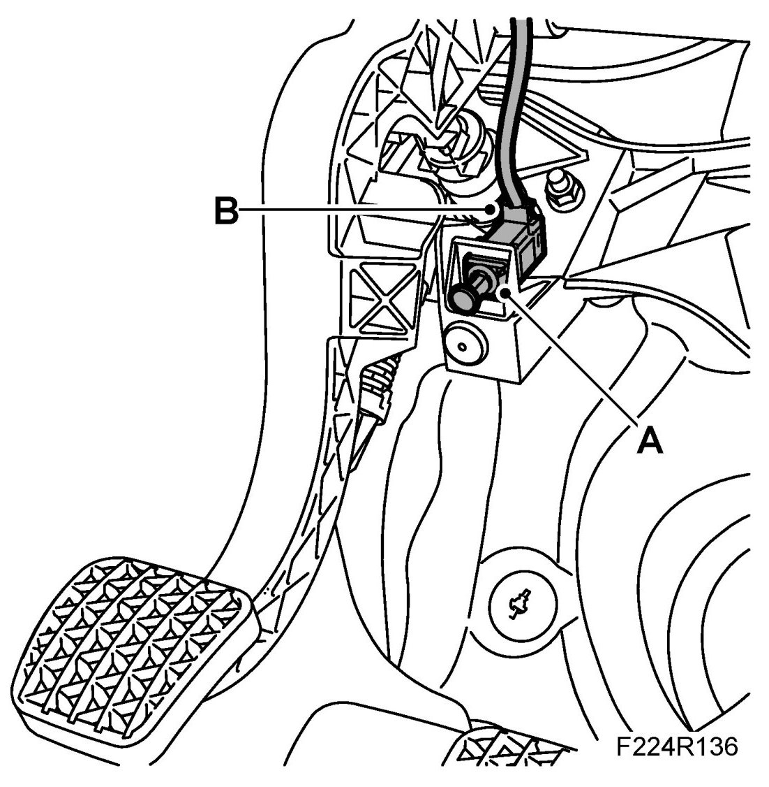
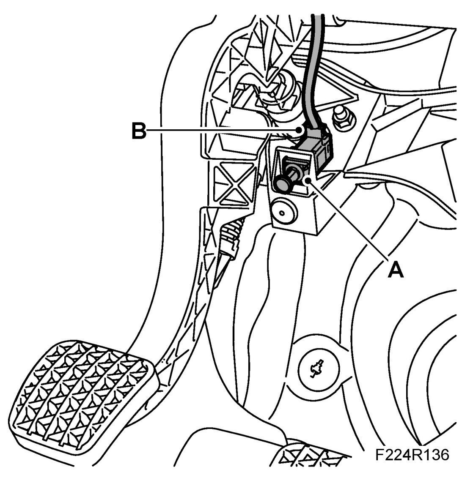

Antitheft and Alarm Systems: Service and Repair
Switch, Coupling, Immobiliser (411)
To remove
1. Remove the acoustic baffle on the driver's side.

2. Pull out the contact's push rod and locking sleeve.
3. Compress the lock tabs and remove the contact (A).
4. Unplug the connector (B)
To fit
1. Plug in the connector (B)

2. Pull out the contact's push rod and locking sleeve.
3. Fit the contact.
NOTE: The contact must fit the coding in the bracket.
4. Fit the acoustic baffle on the driver's side.